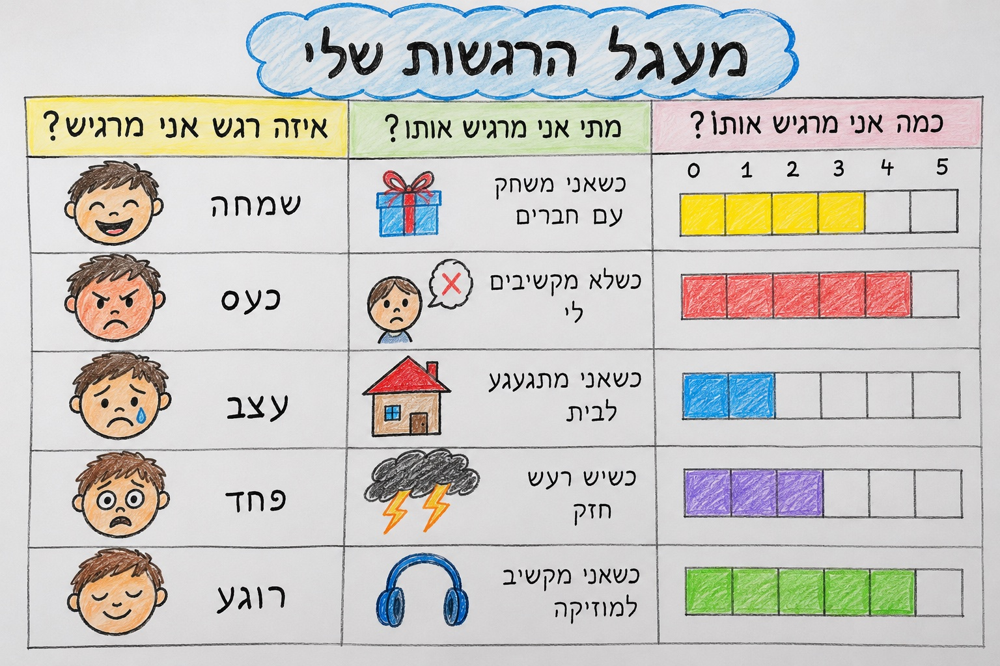
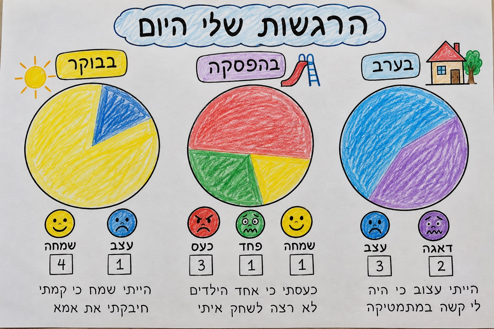
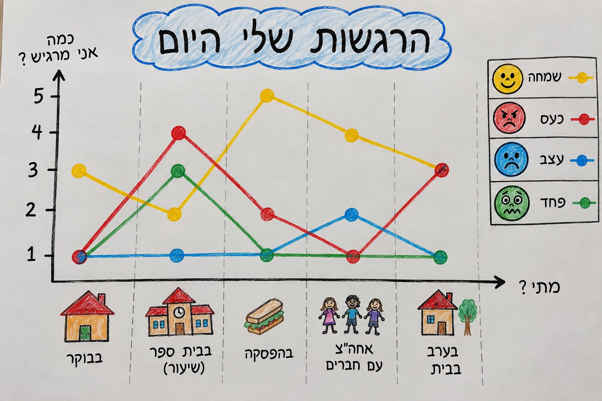

מצגת מנחה: זיהוי ושייום רגשות, מפגש עם הרגש בשבוע, ואז עוצמה — בדרך משחקית וברורה.
יש רק חידוד קטן: קודם שם לרגש, אחר כך איפה הוא מופיע, ורק אז כמה חזק. ככה הילדים לא מתבלבלים בין "מה אני מרגיש" לבין "כמה".
מפגש ראשון ושני: תפקיד הרגשות, זיהוי ושייום. כל רגש — גם הלא נעים — יש לו תפקיד.
"רגשות הם כמו שלטים בגוף — הם מספרים לנו שמשהו קורה. אין רגש 'רע'. יש רגש שעוזר לנו, ואנחנו לומדים לשים לו שם ולשים לב כמה הוא חזק."
דוגמה: מעגל הרגשות

כל אחד בוחר רגש אחר (אם אפשר), ומצייר / מספר איפה הוא נפגש איתו במהלך השבוע.
אותו רגש יכול להיות חלש או חזק — כמו ווליום במוזיקה, או מדחום.
איך מסבירים בקצרה: "שמחה 1 = חיוך קטן. שמחה 5 = קופצים משמחה. כעס 1 = קצת מעצבן. כעס 5 = הגוף רוצה לצעוק."
בוחרים אירוע → כל אחד מראה (או לוחץ) מספר 1–5. משווים: למה לא לכולם אותה עוצמה?
העוצמה שלי לאירוע הזה:
בחרו אירוע, ואז מספר.
ציר אופקי = מתי? · ציר אנכי = כמה אני מרגיש? (1–5) · כל צבע = רגש אחר

טוב למי שאוהב חלקים ויזואליים — כמה מכל רגש באותו זמן.

טוב לראות עליות וירידות — "השמחה עלתה בהפסקה".
הכי פשוט להתחלה: צובעים ריבועים לפי כמה חזק.